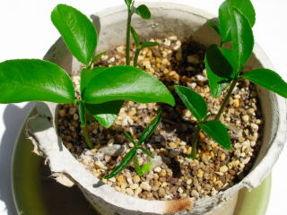
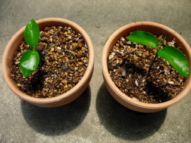
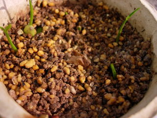
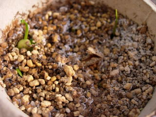

鉢を大きくしました。
2010/07/24
3号から6号鉢に植え替えましｔ。
まだ小さいので3号でも十分だったんですが、鉢が大きい方が早く大きくなるかなとか、水の管理が楽かなと思い変えました。
あと、苔をちょっと植えてみました。盆栽みたいになるといいです。
なるかな？
2010/07/24
3号から6号鉢に植え替えましｔ。
まだ小さいので3号でも十分だったんですが、鉢が大きい方が早く大きくなるかなとか、水の管理が楽かなと思い変えました。
あと、苔をちょっと植えてみました。盆栽みたいになるといいです。
なるかな？
2010/05/29
種がちょっと大きいので栄養がいっぱいあるんでしょうか？伸びがいいですね。とっても窮屈になったので植え替えしました。

大きいの2本を鉢植えにしました。

このち調子でドンドン大きくなって欲しいです。この夏でどれくらい成長するんでしょうね。
2010/05/16
小さいので成長がよくわかりますね。すーっとした芽が伸びてきました。

新しく4本目も出てきそうです。
2010/05/09
やっと芽が出てきました。

3本出てます。
5月になって気温が高くなったおかげで発芽したのかもしれません。
そう思うと、種を蒔くのをもっと暖かくなってから蒔けば良かったかなと思いました。
2010/03/13
家の庭で採れた八朔（たぶん）の種を蒔いてみました。

今、沢山収穫出来ているのでとりあえずは必要ないんですが、果物の木って枯れちゃうことがよくあるので、予備になるかもって蒔きました。
種蒔き第1号です。多いとは思いましたが、1鉢の中に10個くらい種を入れました。
早く芽が出て欲しいです。
畑仕事じゃないよ。